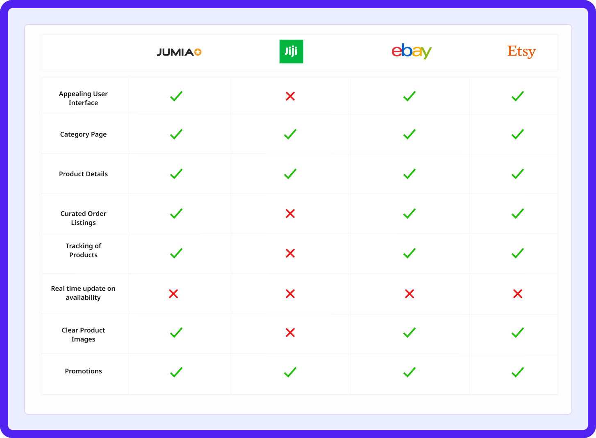
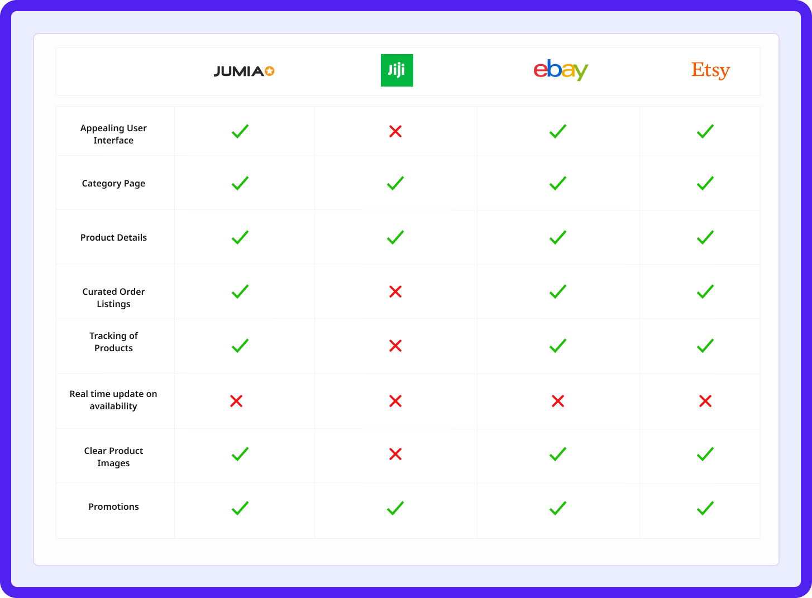

MUSIQ Streaming App
Cross-Platform music application streaming experience
My Role
Lead Product Designer
Industry
E-Commerce

Introduction
Musiq is an mobile and desktop music streaming application that offers seamless streaming experience for users from different part of the world.
Brief and Scope
Music generally can be so emotional. People often use music as a means to communicate and express their emotions, feelings, and excitements either personally, or to other people. In as much as Music is widely appreciated worldwide and widely engaged with, most or few users lack the ability to share and listen to their favorite music with other people, an unsatisfying experience when listening to music.
My Role
I was the Product Designer on this project. My roles was tasked to come out with a clear concept and approach of how the product can be functional, user friendly and have a good user conversion rate, through effective UX strategies.
Design Process


Research Discovery/Insights Generated
Everyone appreciates music but not everyone loves it. Different people listen to music for different purposes. Some express how they feel, and communicate their feelings, while some only engage just for the listening experience. Having speaking 8 users to learn about thier listening experiences, this research revealed two categories of users: Music Lovers and Music listeners.
Painpoints gathered
I put together an understanding of the different pain points of the users gathered, from different participants i spoke to. Although, some of the participants made the same points, of which i had to put together.
Aesthetics
- Unappealing user interfaces/experiences
Availaibility
- Absence of Lyrics to songs
- Absence of In App Library for listed features
Accessibility
- Unavailability of cross platform experience i.e Desktop
Screenshots of some feedbacks


Competitive Audit
To further validate the research frameworks, i conducted a prelimary competitive audit of other streaming platforms to better understand how they are able to shape the streaming experiences of thier products, skimmed through user feedbacks and ratings on playstores to better understand user needs/wants. The goals was to use both the strength and weakness of these platforms as an advantage, to connect both user and business goals together.
 

Product Goals

Tombre Ebilafa
Female
 Lagos,Nigeria
Lagos,Nigeria
Interests
Singing, Outdoor Activities
Challenges
-
 Inability to communicate with an online support
Inability to communicate with an online support
-
Challenging and Confusing user interfaces
Wants
-
A chat feature with a customer rep, that way failed transaction get sorted immediately
-
Easy-to-use User interfaces

Pelumi Lawrence is a content writer freelancer, who also spends part of his time in learning electrical works. Lawrence oftenly goes on breaks when all works has been concluded. He spends his time reading books and listening to news to keep him updated
Tosin Dorcas
Female
Lagos,Nigeria
Interests
Singing, Baking, Travelling
Challenges
-
Inability to find downloaded songs, or playlists
-
Absence of in app lyrics or mixed lyrics
Wants
-
Curated In-App Library that houses downloads and other listings
-
Lyrics feature that allows users to sing along seamlessly
Pelumi Lawrence is a content writer freelancer, who also spends part of his time in learning electrical works. Lawrence oftenly goes on breaks when all works has been concluded. He spends his time reading books and listening to news to keep him updated
Product Goals
Building products that solves varieties of user needs, most especially for a music streaming platform that shapes the listening experiences of its users through the implementation of core features, will continually encourage users to love music, and stay consistent using the such platforms - Goal of every products.
User Goals
-
User Interface built with users on mind: Designing any engaging interfaces with users in mind, using clear, and distincts elements across all design layouts - Designing for accessibility and inclusivity
-
Curated Library List: Staying organised is the goal of every user. A curated library that organises the lists of songs created or saved by users, will help users find thier needs at ease without experiencing any frustrations - Accessibility and easeness to features
-
In App Extensive Features: Designing an engaging interfaces with users in mind, using clear, and distincts elements across all design layouts - Designing for accessibility and inclusivity
Business Goals
-
Premium Paid Features: In app features available only on premium subscription. This further generates revenue for product sustainability
-
In App Ads: Designing an engaging interfaces with users in mind, using clear, and distincts elements across all design layouts - Designing for accessibility and inclusivity
user Journey
Tombri Ebi journey revealed how easy it would be for users to find a music streaming platform that allows easier finding of music through a scan and stream feature.

Information Architecture
An end to end representation/workflow of the information architecture showing the walkthrough of one phase to other other.

Sketches/Paper Wireframes
Designs
An end to end representation/workflow of the information architecture showing the walkthrough of one phase to other other
Onboardings
The onboarding helps users understand what can be done on the app and help inform the users about the app functions, benefits and features expectations. For QUID, images were added to aid the content navigation for users while onboarding them.

.png)
.png)
Registration & Sign In
Users can proceed to sign in with their social account, or manually sigh in with theirr details. For new users signing up, users can personalize their home screen with what they want or their interests, users are prompted to select at least 5 artists and the genre of music they want.
.png)
.png)
.png)
In App Navigations
The home page consists of the last played, Top artist recommendations, Trending songs and so much more will be shown while users scroll horizontally. The navigation bar consists of the Home, Search Page, My Lists, and Profile Page.
Since most user's challenges was the inability to curate their playlist or create a new playlist, or the inability to find their downloaded songs, i created a library feature as part of the navigating icons for the app. Accessibility was critically considered during the course of working on this project. Each list has different categories, with the name and numbers of items in each category. Users also have the option to create more categories. The library will aid users navigation and also allows users to easily find their songs, or list without delay and frustrations

.png)
.png)
The search page allows users to search for any songs, or artists of their choice. I added a scan feature that allows users to scan any song they don't know who the artist is or the song title. Since this was a search page, the best position I brainstormed the feature is fit to be for easy accessibility by users is to add it near the search. While searching, users can see popular searches by people and also see other recommendations to personalise their experiences.
For the scan feature, users will be prompted to place their phone near a device like a speaker or a sound system in a moving vehicle, or anywhere the song they wish to know the song that is being played. The app scans the song and gives suggested results of the song.
.png)
Playing Experience
For each song users listen to, I added the share icons which give users the ability to share their favorite music, and also the invite feature, which also gives users the chance to invite friends and others, to share their listening experience. Also, users have the option to add a song to their favorite listen, download, and sing along. Below is the lyrics' feature. Users will drag up to see the lyrics of the song they are currently listening to.
.png)
.png)
.png)
PlayList
Users have the option to share thier playlist, and also have control on the privacy of the playlist they create, either to be set public for anyone to listen, or restrict to private.
.png)
.png)
.png)
Registrations & sign in


STREAMING EXPERIENCES

Maximizing and Minimizing experiences

Learnings
Music makes people happy and it definitely resonates how every individual feels at every point. Speaking with one of the participants i interviewed, she said and i quote “Music is my life and it makes me happy, this is one of the basic necessities i need in my everyday activities to be progressive”
With this project, it taught me how music, and a platform with good design and streaming experiences help shapes a part of users life